Hơn 15 video đã xem kỹ, đọc hết lời, đo từng khung
5 lỗi title
Người làm ra YouTube Studio
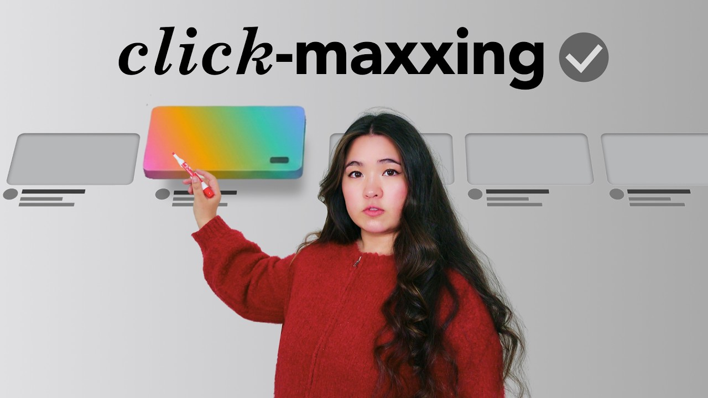
Thumbnail cho TV
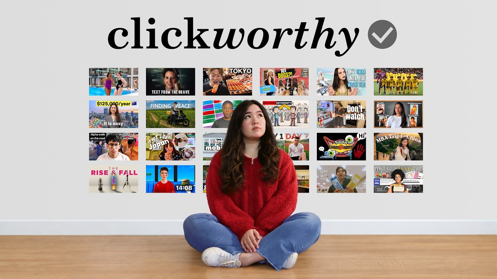
Chữa thumbnail thật
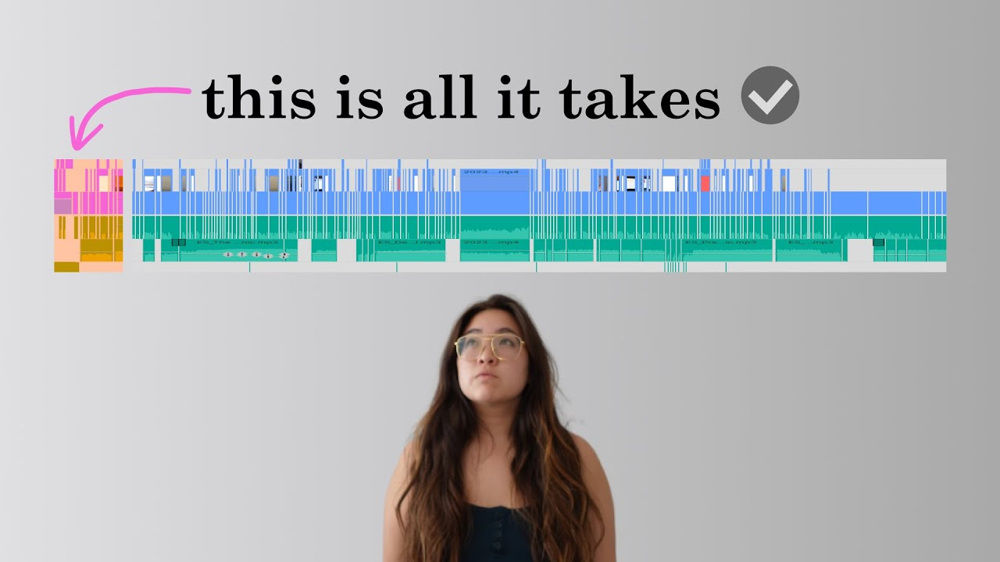
Đoạn mở đầu
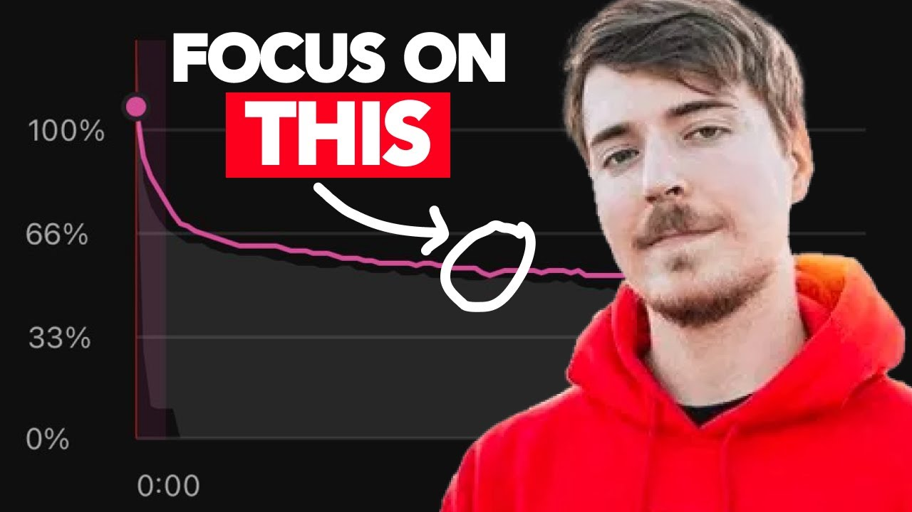
MrBeast & giữ chân
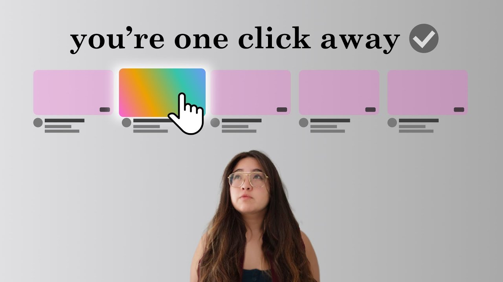
Công thức thumbnail
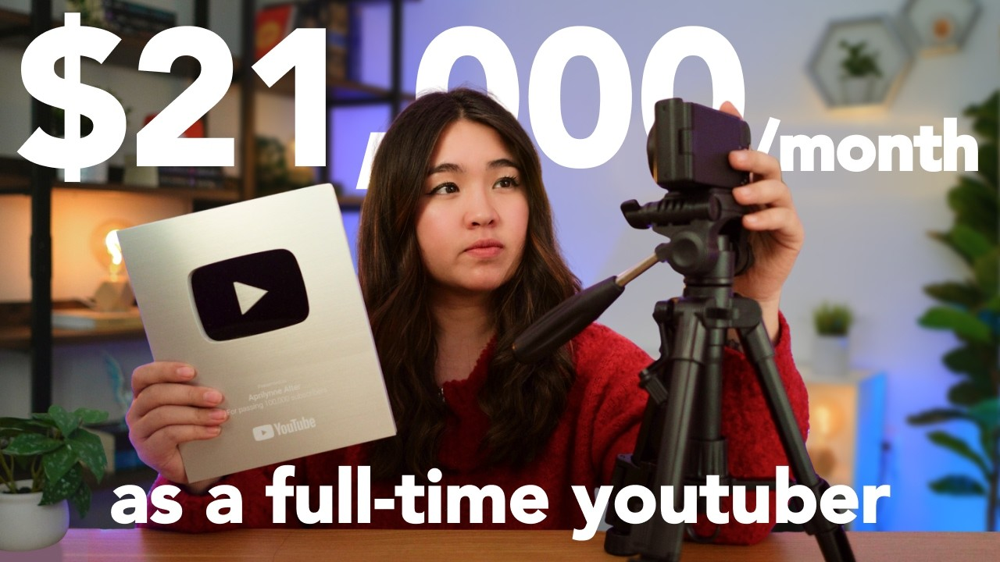
0 → 100K từng giai đoạn
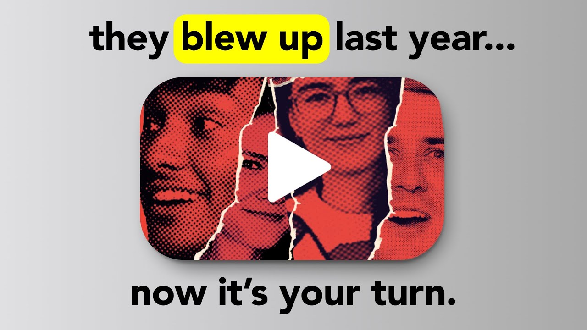
Kênh bứt phá học gì
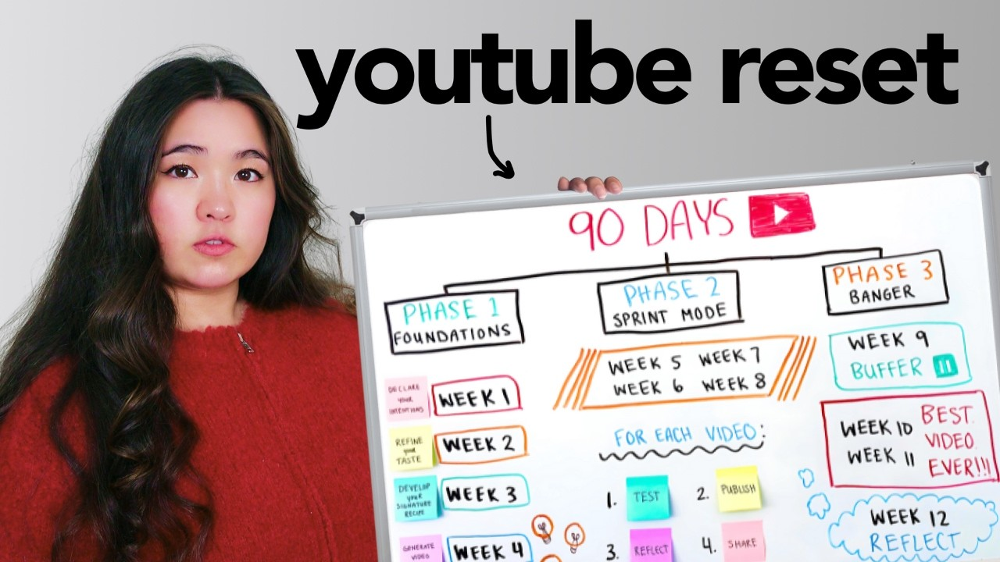
Hệ thống 90 ngày
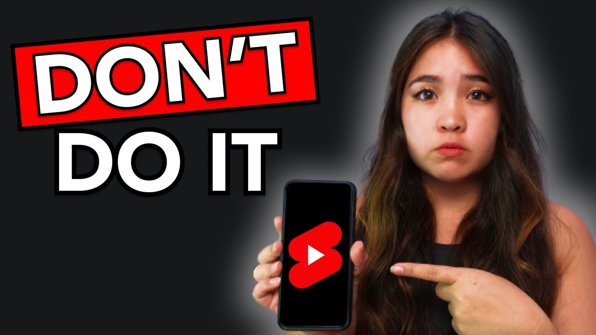
Shorts có đáng?
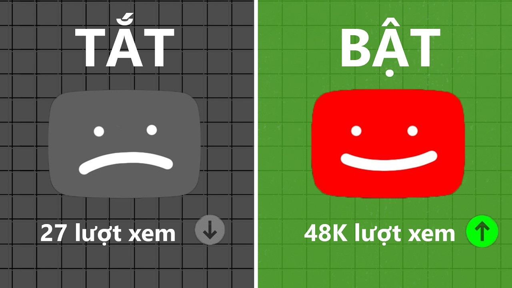
15 cài đặt kênh (VN)
Ô hiện 12 video; danh sách đủ ở trang cuối · phần lớn từ kênh Aprilynne Alter · thêm: Creator Insider (Todd Beaupré, Paddy Galloway, Amjad Hanif), Quan Ngo, YouTube Help, Paddy Galloway, 3Blue1Brown, Veritasium, Vsauce2 và một video cộng đồng Việt trên Facebook
Phần 1 · Thiết lập kênh · Trước khi tạo kênh
Tài khoản Google phải sống như người thật — rồi mới mở kênh
YouTube nói gì
Tính năng nâng cao mở bằng “lịch sử kênh”, gồm cả dữ liệu tài khoản Google: tạo khi nào, thế nào, dùng thường xuyên ra sao, kết nối dịch vụ Google bằng cách nào.
Tài khoản mới tinh, trống trơn → phải xác minh thêm (số điện thoại, giấy tờ, video).
Nên làm
Dùng tài khoản thật, có tuổi, dùng hằng ngày: Gmail, tìm kiếm, YouTube
Trước khi đăng: tìm và xem video trong ngách như người làm — vừa có lịch sử, vừa học được nghề
Xác minh số điện thoại + bật 2FA
Kênh thương hiệu, thêm người quản lý để dự phòng
Ranh giới
“Nuôi” hồ sơ ảo để tạo Gmail hàng loạt không cần số điện thoại, trình duyệt chống phát hiện, mỗi kênh một IP → là lách xác minh: vi phạm chính sách, có thể bị chấm dứt mọi kênh liên quan.
“Tài khoản có lịch sử thì video được đề xuất nhiều hơn”: chưa có bằng chứng — đề xuất đi theo người xem.
Ba cấp tính năng: Tiêu chuẩn (có ngay) → Trung cấp (xác minh số điện thoại) → Nâng cao (đủ lịch sử kênh, hoặc xác minh giấy tờ / video).
Nguồn: YouTube Help — “Access features” (answer/9890437), “Channel history” (answer/9891124) · video Facebook “Hành trình 30 ngày kiếm tiền với YouTube — ngày 12” (2:07–3:07) · Creator Insider (Todd Beaupré)
Phần 1 · Thiết lập kênh
Làm ngay từ ngày đầu — sai là kẹt khi kiếm tiền
Quan Ngo — “15 cài đặt YouTube quan trọng…” (10/2026)
Cài đặt
Vì sao
Quốc gia cư trú đúng nơi ở
Thuế, điều kiện YPP, mã PIN AdSense gửi về địa chỉ thật
Dành cho trẻ em? khai đúng
Bắt buộc theo luật (COPPA). Nhầm “có” → tắt bình luận, hạn chế quảng cáo
Xác minh SĐT
Mở thumbnail tự chọn, video > 15 phút, livestream
Tính năng nâng cao + 2FA
Điều kiện bắt buộc để vào YPP (giấy tờ, video, hoặc lịch sử kênh)
Email liên hệ ≠ email tạo kênh
Chặn lừa đảo, mã độc gửi thẳng vào tài khoản quản trị
Handle, mô tả, link, watermark
Dễ tìm kênh, người xem hiểu kênh làm gì
Nguồn: Quan Ngo (youtu.be/XmwaLebHOGg) · đối chiếu YouTube Help: YouTube Partner Program overview & eligibility
Phần 1 · Thiết lập kênh
Mẹo cộng đồng: kiểm chứng tới đâu?
Mẹo trong video
Đánh giá
Vì sao
Điền hết 500 ký tự từ khoá kênh, tag
Ít tác dụng
YouTube: tag “đóng vai trò tối thiểu”; title, thumbnail, mô tả quan trọng hơn. Nhồi tag còn vi phạm chính sách spam
Để riêng tư 24–48 h rồi mới công khai
Có lý
Đợi xử lý HD/4K và kiểm tra bản quyền xong. “Cho YouTube đọc video” chưa có bằng chứng
Chọn đúng danh mục
Nên làm
Rẻ, đúng; nhưng không phải đòn bẩy lớn
Giấy phép Creative Commons cho “quảng bá miễn phí”
Cẩn thận
CC BY cho phép người khác dùng lại, cả để kiếm tiền, và không rút lại được
Bình luận không kiểm duyệt để có tương tác
Cẩn thận
Kéo theo bình luận spam, lừa đảo; người xem thật bị ảnh hưởng
Ẩn số lượt thích để tránh “ít like = dở”
Chưa kiểm chứng
Kinh nghiệm cá nhân của tác giả, chưa có số liệu
“Bật đủ tính năng = báo hiệu người thật”
Chưa kiểm chứng
Bật để dùng được tính năng thì đúng; tác động lên đề xuất thì chưa ai chứng minh
Đối chiếu: YouTube Help — “Add tags to your video”, “License types on YouTube”; bộ luật CC BY 4.0 (dùng thương mại, không thu hồi)
Phần 2 · Ý tưởng
Ý tưởng đặt trần, cách làm chỉ quyết định chạm tới đâu
Trần: gõ chủ đề lên YouTube, sắp theo lượt xem — video cao nhất được bao nhiêu?
Ngoại lệ: ý này đã từng đạt ≥ 3× trung bình của một kênh nào chưa?
Đề tài hẹp? Đổi khung — gắn nó vào một mong muốn ai cũng có.
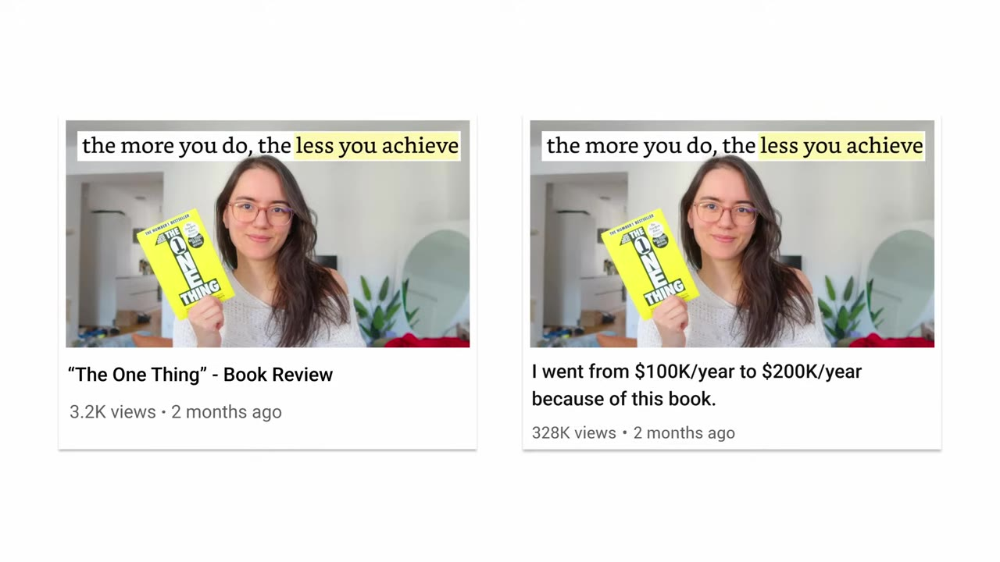
Cùng một cuốn sách: “Book Review” ↔ “I went from $100K/year to $200K/year because of this book” (328K view)
Nguồn: Aprilynne Alter — “Stuck in The YouTube Dip?” (0:41–4:47). Lưu ý: số 3.2K bên trái là minh hoạ, không phải A/B thật.
Phần 2 · Ý tưởng · Paddy Galloway
Phễu ý tưởng ba nguồn — và lời hứa phải được giữ
Bên trong
Thứ đã chạy tốt trên chính kênh mình
Bên ngoài
Outlier của người khác — không “lặp lại được không?” mà “thêm góc riêng được không?”
Nguyên bản
Thứ chưa ai làm, mình chỉ muốn thử
Cảnh báo: chạy theo outlier của người khác quá nhiều thì mất mình. Khẩu vị khán giả cũng đổi theo thời gian — outlier là cách nhìn xu hướng mới.
Intro: “Title–thumbnail hứa, intro xác nhận lời hứa.” Làm người xem thấy mình chọn đúng; đừng nhồi mọi thứ vào mở đầu.
Nguồn: Creator Insider — “Paddy Galloway Dives Deep on Video A/B & Ask Studio” (9:21–10:13, 16:48–18:50)
Phần 2 · Ý tưởng
Thắng một lần là may. Lặp lại được mới là định dạng.
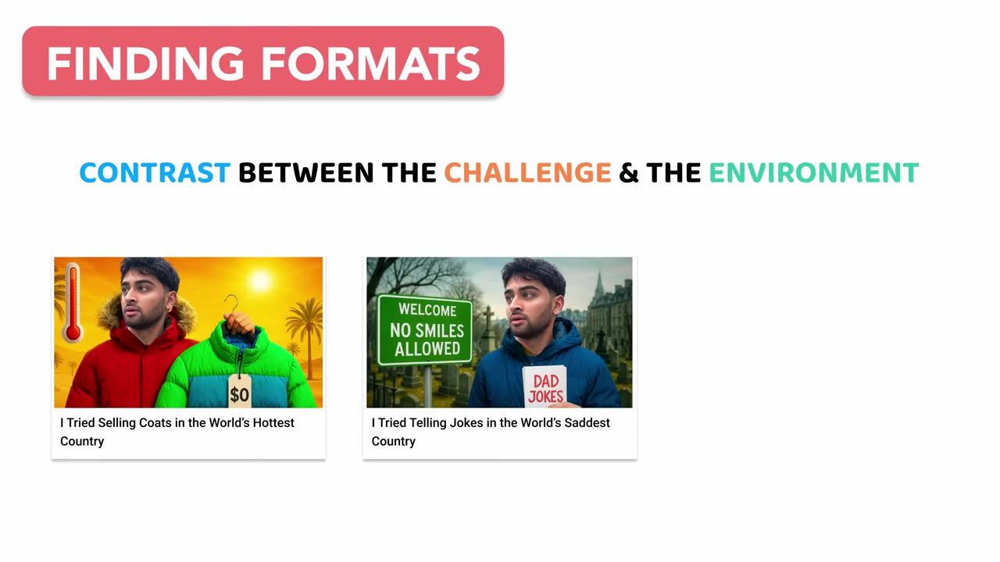
Thử thách × môi trường trái ngược
“Selling Coats in the World’s Hottest Country” · “Telling Jokes in the World’s Saddest Country”
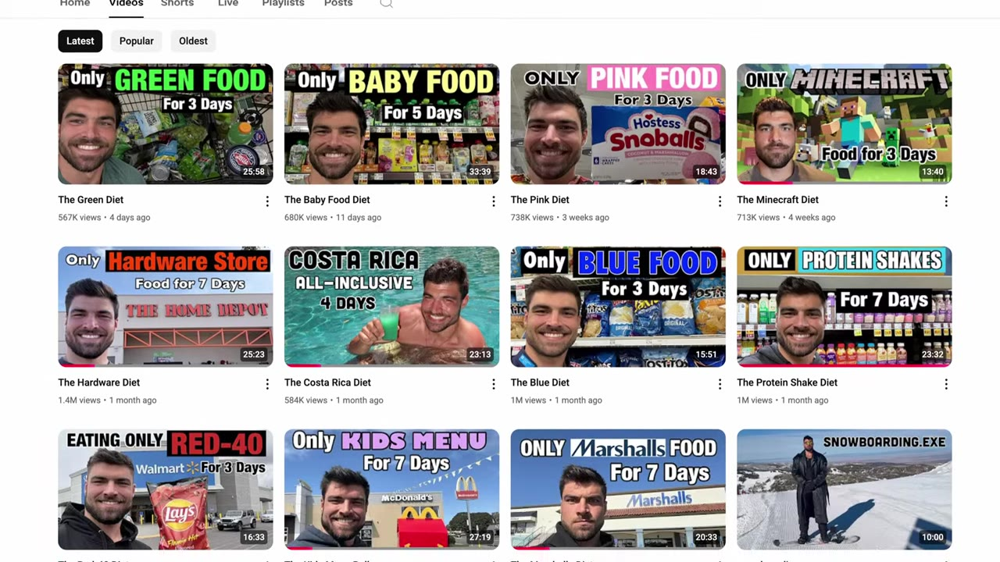
Một khuôn, mười hai tập
“Only ___ Food for N Days” — cùng câu, cùng kiểu thumbnail; càng quen càng dễ bấm
Nguồn: Aprilynne Alter — “Stuck in The YouTube Dip?” (7:11–9:48)
Phần 2 · Ý tưởng
Kênh là một chương trình TV, không phải các video rời
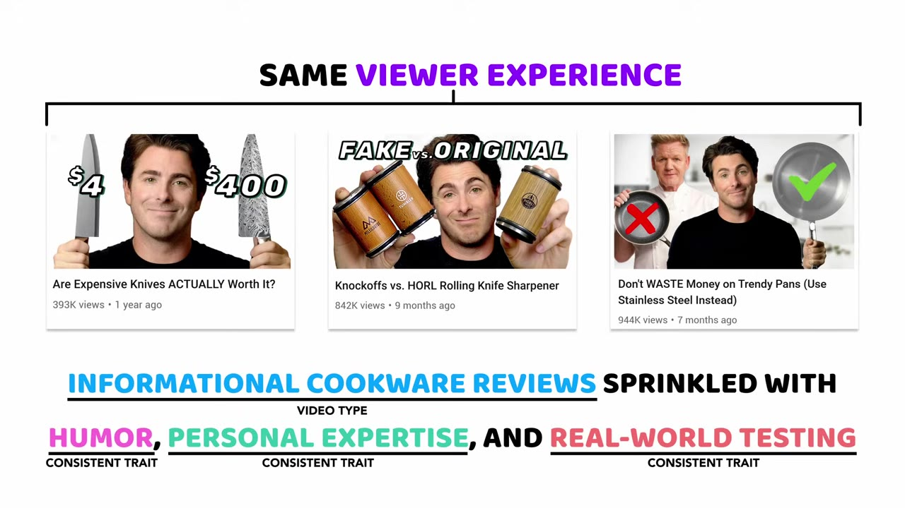
80%
khán giả của video trước có muốn xem video sau không?
Giữ cố định trải nghiệm xem: dạng video + vài nét cá tính. Kênh trong ảnh: review đồ bếp + hài + chuyên môn + thử thật.
Nguồn: Aprilynne Alter — “Stuck in The YouTube Dip?” (4:48–7:07)
Phần 2 · Ý tưởng
Chưa vẽ được thumbnail thì chưa có video
“I’d rather have that existential crisis before I filmed the video.” — MrBeast
Hỏi 1
Thumbnail là gì?
Hỏi 2
Video là gì?
Hỏi 3
5 giây đầu là gì?
Hỏi 4
30 giây đầu là gì?
Nguồn: Aprilynne Alter — “I Watched Every MrBeast Interview” (8:43, 11:16)
Phần 3 · Title
Title: cùng nội dung, lời hứa khác hẳn
Ngắn — lời hứa nằm trong ~50 ký tự đầu, phần sau có thể bị cắt “…”
Bứt rứt — đọc xong mà không bấm thì thấy thiếu
Khớp độ dài — lời hứa nhỏ cho video 20 phút thì ít ai bấm
Ý kiến mạnh — “Bananas are the best food on the planet”, không phải “I like bananas”
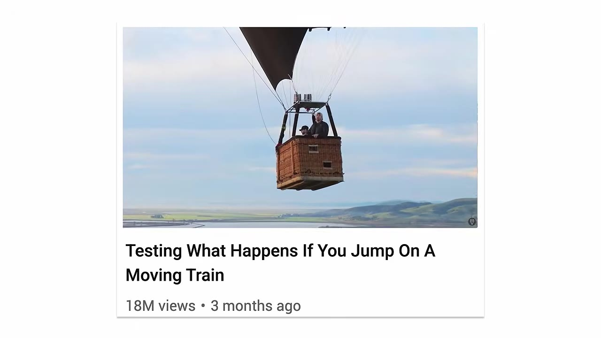
Mark Rober: “I answered 7 engineering questions” → “Testing What Happens If You Jump On A Moving Train” (18M)
Nguồn: “I Watched Every MrBeast Interview” (3:31–5:39) · “How to make an EVEN MORE killer YouTube intro”
Phần 3 · Title · Lỗi 1
Không cho người xem lý do để bấm
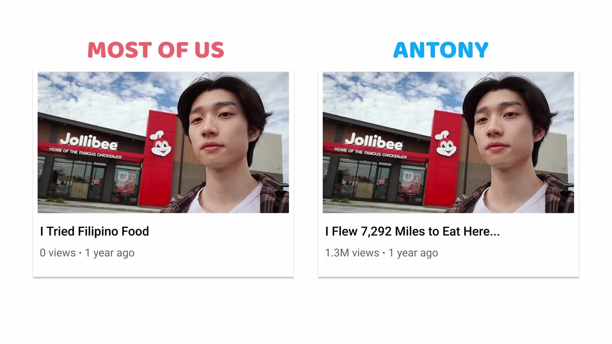
Title tốt mở một vòng lặp trong đầu người xem:
Sao bay xa thế? Quán đó bán gì? Có đáng không?
Não ghét suy nghĩ dang dở — muốn đóng vòng thì phải bấm.
Nguồn: Aprilynne Alter — “give me 8 minutes, I’ll make your titles 81% better” (02/2025, 0:30) · ví dụ kênh Anthony Chen
Phần 3 · Title · Lỗi 2
Tự nghĩ từ đầu thay vì mượn khuôn đã thắng
1
Tìm outlier — video vượt xa trung bình của chính kênh đó (lướt thư viện video, nhìn số view lệch hẳn)
2
Bóc khuôn — thay chữ cụ thể bằng [ô trống]
3
Đổ nội dung của mình vào khuôn — chỉ mượn MỘT yếu tố, giữ phong cách riêng
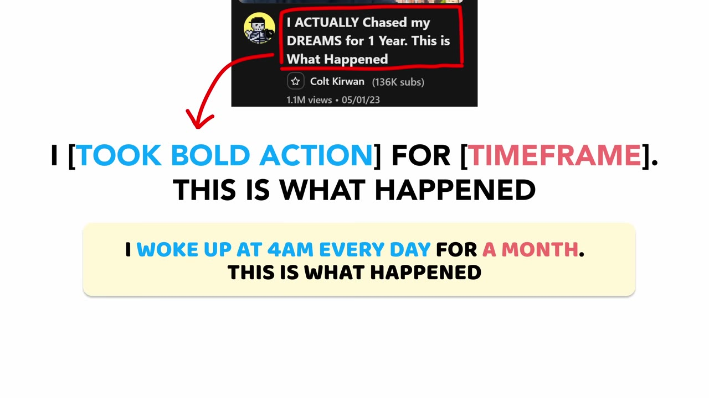
Nguồn: “…titles 81% better” (1:30) · “Stop Copying Big YouTubers” (01/2025) · công cụ tìm outlier trong video là nhà tài trợ
Phần 3 · Title · Lỗi 3 và 4
Từ nhạt, câu dài, ý chính nằm cuối câu
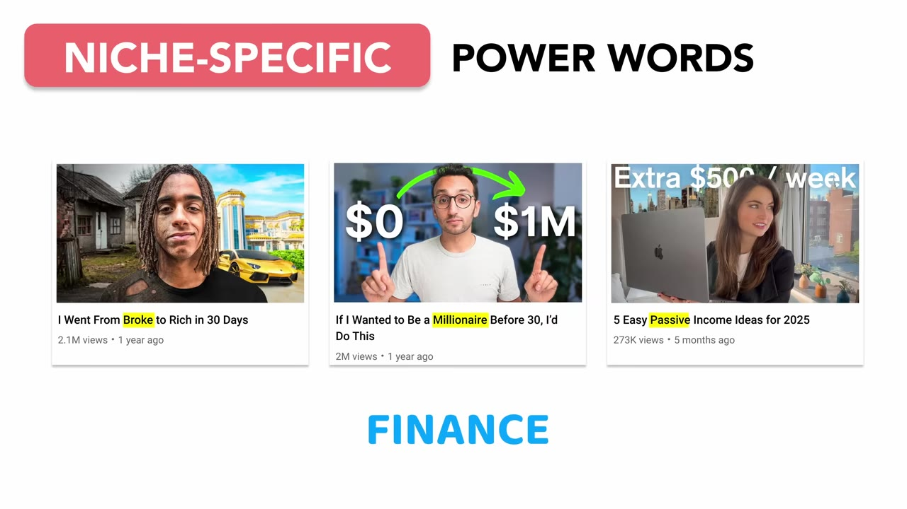
Dùng “từ mạnh” của ngách mình
“How to edit videos” → “…cinematic videos like a pro”. Tài chính: broke, millionaire · Thể hình: shredded, transformation
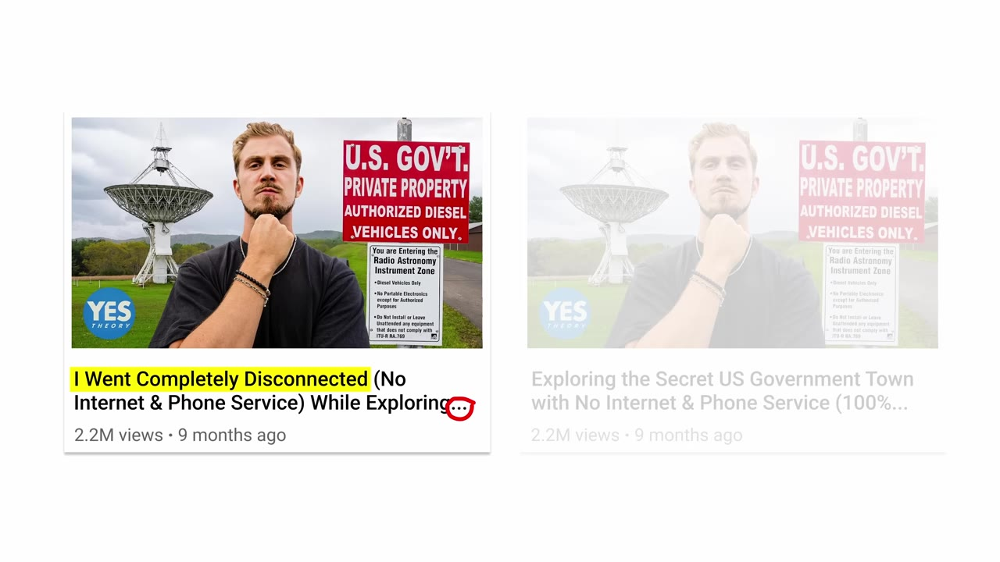
≤ 55 ký tự, từ quan trọng lên đầu
Người xem lướt, không đọc. Chỉ đọc nửa đầu vẫn phải hiểu lời hứa.
Nguồn: “give me 8 minutes, I’ll make your titles 81% better” (2:34–5:37)
Phần 3 · Title
Ý đầu tiên hiếm khi là ý hay nhất: 30 title trong 20 phút
5 phút
Từ đầu mình
Viết mọi cách nói nghĩ ra được
5 phút
5 kênh “mẫu”
Khán giả khác, cùng kiểu giá trị — mượn cấu trúc title
5 phút
Outlier cùng đề tài
Video vượt xa trung bình kênh của nó — lấy cách nói, từ khoá
5 phút
Nhờ AI
Đưa cả danh sách, xin thêm biến thể
Rồi chọn 3, ghép với thumbnail, đưa vào Test & Compare — từ cuối 2025 thử được cả title, tối đa 3 phương án, chọn thắng theo thời gian xem.
Nguồn: Aprilynne Alter — “My BIGGEST Advice for Starting and Growing a YouTube Channel” (10/2025, 16:34) · Search Engine Journal: title A/B testing rolls out globally
Phần 3 · Title
Title và thumbnail là MỘT cái móc, chia làm hai nửa
Thumbnail CHO THẤY
Hiện tượng, đối lập, khoảnh khắc, con số lạ — bằng hình, ≤ 5 từ
Title NÓI
Vì sao, khẳng định, lời hứa — phần hình không nói được
Kiểm cặp
Đạt khi
Chữ trên thumbnail lặp title?
Không — mỗi bên mang một nửa thông tin
Đọc cả hai, còn khoảng trống?
Còn — biết “cái gì”, chưa biết “vì sao”
5 giây đầu khớp cặp này?
Câu đầu nói title, khung đầu là vật của thumbnail
Tổng hợp: “killer thumbnail” (“text should never just repeat your title”) · “thumbnails 81% better” · “killer intro”
Phần 3 · Title
Kênh nhỏ phải cài sẵn lý do để người lạ tin
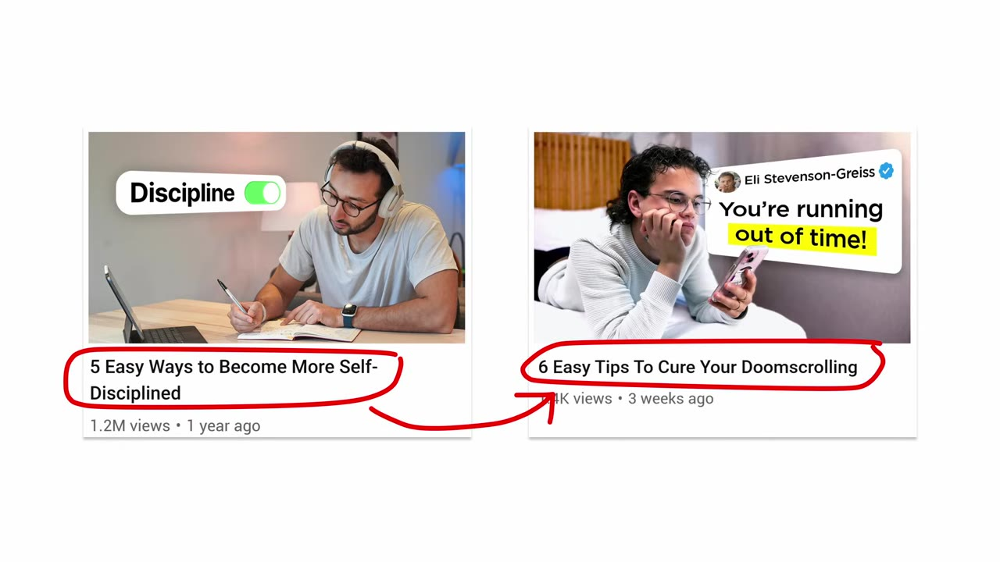
Cùng kiểu title “Easy Ways/Tips…”: kênh lớn 1.2M, kênh nhỏ 1.4K. Chép title kênh lớn thường không chạy.
Chuyên môn
Bác sĩ, kỹ sư, người trong nghề
Bằng chứng
Kết quả, con số thật, trước → sau
Công sức
“30 ngày”, “7,292 dặm”, “33 cuốn sách”
Cảm xúc
Điều riêng tư, thật
Nguồn: Aprilynne Alter — “Stuck in The YouTube Dip?” (9:55–12:50)
Phần 4 · Thumbnail · YouTube đang chuyển sang TV
Trên TV, người xem chỉ thấy NỬA TRÊN thumbnail
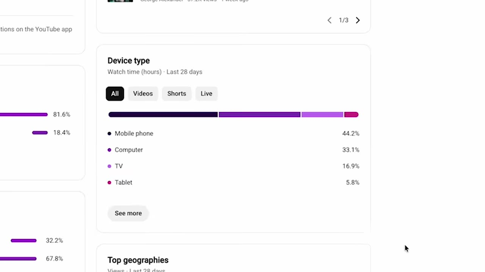
1. Kiểm: Analytics → Khán giả → Loại thiết bị. TV ≥ 10% → áp dụng ngay
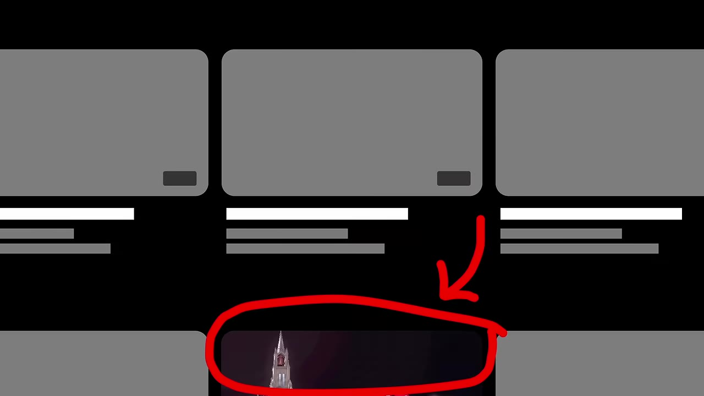
2. Vì sao: trang chủ và đề xuất trên TV cắt hàng dưới; phải bấm xuống mới thấy đủ
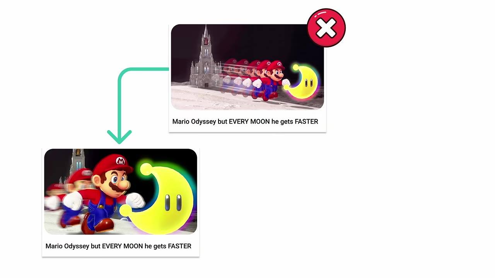
3. Sửa: đưa vật chính lên trên, hoặc thêm chữ ở 1/3 trên
Phép thử 50%: che nửa dưới — phần còn lại có đủ khiến người ta bấm nút xuống trên remote, và đoán được video nói gì?
Nguồn: Aprilynne Alter — “give me 9 minutes, I’ll make your thumbnails 81% better” (08/2026, 0:24–1:43) · “ở Mỹ, TV đã vượt điện thoại” là lời tác giả
Phần 4 · Thumbnail · YouTube đang chuyển sang TV
Title co lại, thumbnail phình ra — thumbnail phải tự gợi tò mò
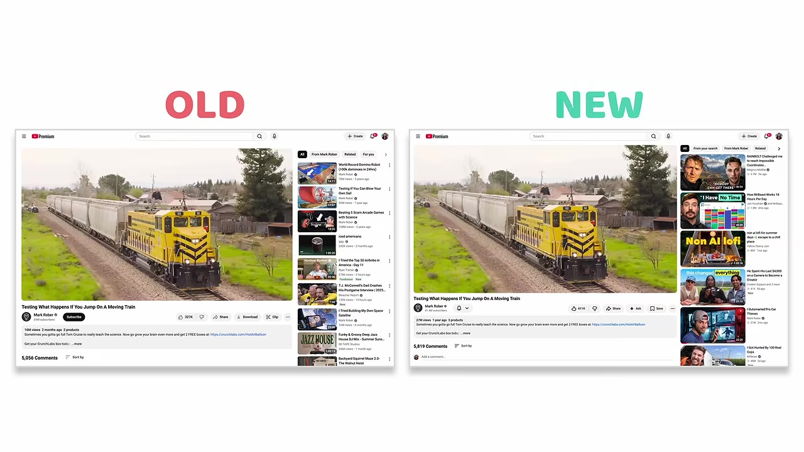
Thanh đề xuất mới: thumbnail lớn, chữ title nhỏ — mắt lướt hình, chỉ đọc title khi đã muốn
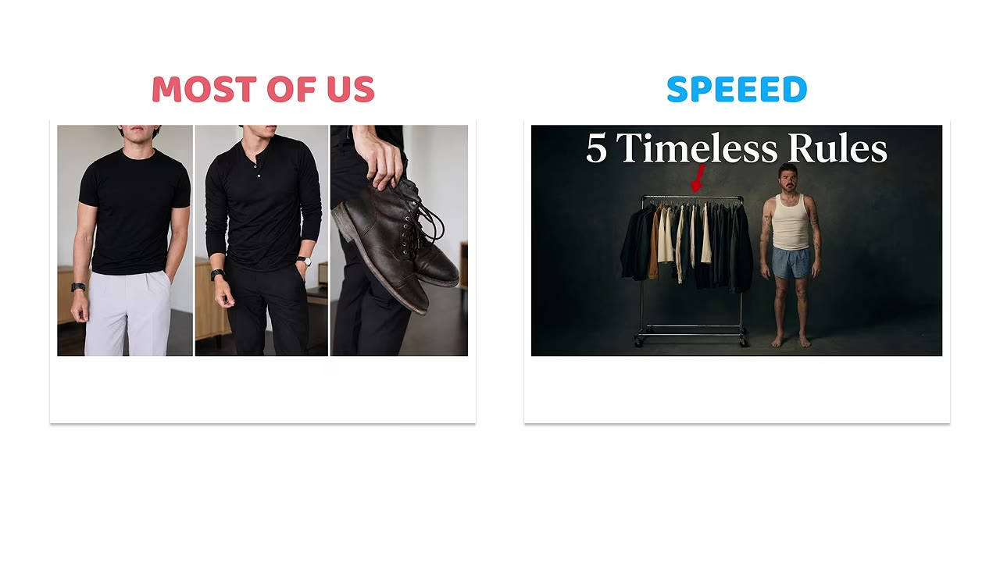
Che title đi: bản phải gợi câu hỏi (5 luật là gì? mặc xong ra sao?) và cảm xúc (tin cậy, hơi “lộ”)
Bắt đầu thumbnail từ “người xem sẽ thắc mắc gì, cảm thấy gì?” — không phải “nên cho thấy gì”. Câu hỏi và cảm xúc thắng sự đúng chủ đề.
Nguồn: “give me 9 minutes, I’ll make your thumbnails 81% better” (1:43–3:52) · ví dụ kênh Speed (thời trang nam)
Phần 4 · Thumbnail
Chọn đúng “nhân vật chính” trước khi lo màu sắc
Sửa thumbnail thật của người xem gửi về (10/2026)
Nhân vật chính = thứ thể hiện lý do bấm, không mặc định là mặt mình
Kênh nhỏ chưa ai biết mặt → thêm cảm xúc, hành động dở dang, căng thẳng
Chữ ≤ 5 từ, ≤ 2 dòng, bổ sung cho title chứ không lặp
Biến thể phải khác ở cấp ý tưởng, không chỉ đổi màu nền
Khuôn mặt — nhưng mặt người lạ yếu hơn mặt quen (thiên kiến quen thuộc)
Thứ ai cũng nhận ra — người nổi tiếng, nhân vật game, giao diện Discord, iMessage
Số tròn, tiền · nguy hiểm, chuyển động · cảm xúc
Màu tươi · thứ đẹp mắt
Tương phản dẫn mắt
Sáng – tối: vật chính ngược độ sáng với nền
Độ bão hoà: nền xám, nhân vật rực màu (Ryan Trahan, “World’s Quietest Room”)
Màu đối nhau trên vòng màu: cam – xanh dương
Khác các kênh xung quanh: ai cũng rực thì thử tối giản
Chữ trên thumbnail: ≤ 5 từ, không lặp title, không bao giờ nổi hơn nhân vật chính. Não đọc hình trong ~13 ms, đọc chữ lâu hơn nhiều.
Nguồn: “how to make a killer youtube thumbnail” (7:12–22:33)
Phần 4 · Thumbnail
Thumbnail đẹp chưa đủ — nó phải gợi một câu hỏi
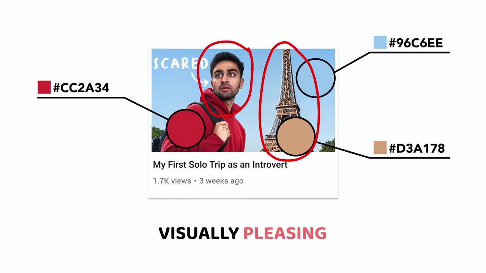
Trước: màu đẹp, chủ thể rõ — nhưng hình không hỏi gì
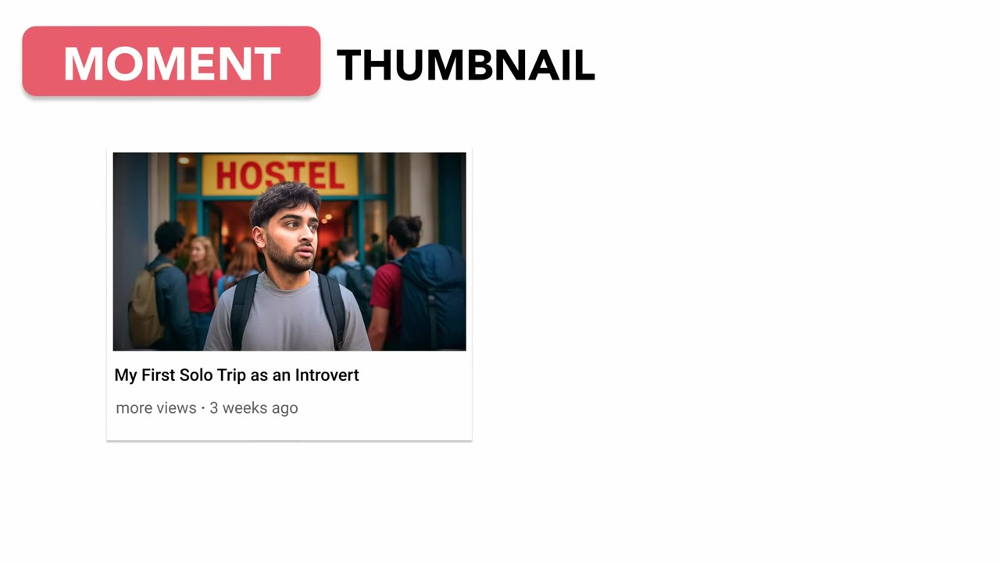
Sau: người hướng nội khựng trước hostel đông người — “rồi sao nữa?”
Kết quả làm sao được thế?
Biến đổi trước → sau
So sánh cái nào hơn?
Lạ khoan, gì thế?
Khoảnh khắc rồi sao nữa?
Nguồn: Aprilynne Alter — “Stuck in The YouTube Dip?” (12:50–15:27)
Phần 4 · Thumbnail
Sáu phép thử trước khi đăng thumbnail
#
Phép thử
Cách làm
1
Che nửa dưới
Giao diện TV chỉ hiện nửa trên tới khi người xem bấm xuống. Còn đủ để hiểu không?
2
Che tiêu đề
Thumbnail một mình có gợi câu hỏi hay cảm xúc không?
3
Thu nhỏ 168 px
Mắt dừng ở đâu? Mọi thứ không giúp là đang cản.
4
Nhân vật chính
Mắt tới vật chính đầu tiên không? Tách bằng màu, độ sáng.
5
Kho mẫu 5 nguồn
Kênh mình · cùng chủ đề · cùng dạng khác chủ đề · ảnh đã lưu · ngoài YouTube. Chép cơ chế, không chép hình.
6
Ba cách viết chữ
Rẻ nhất để A/B: giữ hình, đổi câu.
Nguồn: Aprilynne Alter — “give me 9 minutes, I’ll make your thumbnails 81% better” (con số 81% không có nguồn)
Phần 4 · Thumbnail
Đừng đoán — để YouTube thử giúp
3
thumbnail hoặc title
Test & Compare trong YouTube Studio (title: mở rộng cuối 2025)
Watch time
không chỉ CTR
Bản thắng là bản giữ được nhiều thời gian xem nhất
≤ 2 tuần
để có kết quả
Winner · Preferred · None
Không có bản thắng thường vì các bản quá giống nhau hoặc chưa đủ lượt hiển thị — hãy thử các ý khác hẳn nhau.
Nguồn: YouTube Help — “Test & compare thumbnails” (support.google.com/youtube/answer/13861714)
Phần 4 · Thử nghiệm · Công cụ mới 2026
A/B không chỉ thumbnail nữa
Thumbnail động
Tải 3 thumbnail; YouTube tự chọn bản hợp nhất cho từng người xem (vd. fan cũ thấy mặt bạn, người mới thấy món đồ)
A/B cả video
Bắt đầu với Shorts: thử intro, cách kể, lời kêu gọi; xem đường giữ chân từng bản, 7 ngày để chọn
Ask Studio
Gợi ý ý tưởng, góp ý câu chuyện / hook, tìm video cũ đang “sống lại” để đổi thumbnail, tóm tắt bình luận
Bài học từ A/B: khác biệt nhỏ (chữ đỏ hay trắng, há miệng) gần như không đổi gì — nhiều “mê tín” bị bác bỏ. Thử các bản khác hẳn nhau.
Thắng tuần trước ≠ thắng tuần sau: khán giả được đề xuất đổi theo thời gian, nên Paddy hay chạy lại test.
Nguồn: Creator Insider — “Paddy Galloway Dives Deep on Video A/B & Ask Studio” (Amjad Hanif, YouTube) · công bố tại Made on YouTube 2026, triển khai có thể theo đợt
Phần 5 · Mở đầu video
5 giây đầu là thumbnail thứ hai
“You literally don’t even see the thumbnail… I have to visually convince you to click.” — MrBeast, về video tự phát trên trang chủ
Không tiếng
Tự phát chạy câm, có phụ đề — hình và phụ đề phải tự nói lời hứa
Câu đầu = lời hứa
“Tether is a scam, and I’m going to teach you why.”
Lỗi phổ biến
Mất ~20 giây chào hỏi, dẫn dắt rồi mới chạm vào điều đã hứa
Nguồn: “I Watched Every MrBeast Interview” (10:26–12:20, 14:01) — ví dụ Tether từ Coffeezilla
Phần 5 · 5 giây đầu
Câu đầu khớp title, khung đầu khớp thumbnail
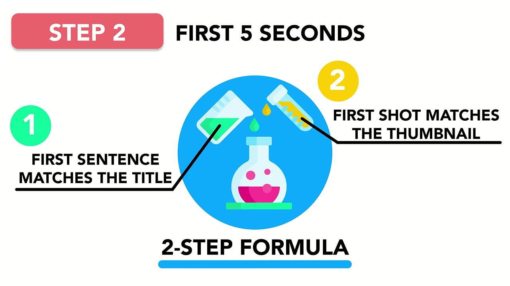
Mark Rober — “Egg Drop From Space”: trứng, que đen, Trái Đất; ba màu xanh – trắng – đen
“This is space, and this is an egg moments before I attempted the world’s highest egg drop.”
Khung đầu = thumbnail. Câu đầu = title + một vòng tò mò (lập kỷ lục hay thất bại?)
Không cần khớp từng chữ, từng điểm ảnh — đủ để người xem yên tâm “không bị lừa bấm”.
Nguồn: Aprilynne Alter — “how to make a killer youtube intro” (09/2023, 1,7 triệu view, 2:05–3:39)
Phần 5 · Mở đầu video
Công thức mở đầu bốn bước
1
Chốt lời hứa trước
Title + thumbnail hấp dẫn nhất, rồi mới viết mở đầu theo nó
2
Giữ lời hứa trong 5 giây
NÓI chủ đề của title, CHO THẤY chủ đề của thumbnail
3
Ba thành phần, thật nhanh
Bối cảnh tối thiểu · khoảng trống tò mò · lý do xem video NÀY
4
Dồn chất lượng lên đầu
Cảnh đẹp nhất của video có một bản ngắn trong mở đầu
Thủ phạm số 1 làm mở đầu dài: bối cảnh. Chỉ đưa vừa đủ để người xem quan tâm, phần còn lại rải dần vào thân bài.
Nguồn: Aprilynne Alter — “How to make an EVEN MORE killer YouTube intro” (25:02)
Phần 5 · 30 giây đầu
Khuôn 30 giây ba nhịp
Giây
Việc
Ví dụ Mark Rober — thả trứng từ vũ trụ
0–5
Khớp lời hứa + mở vòng
Trứng trên nền Trái Đất, “…ngay trước khi tôi thử lập kỷ lục”
5–15
Bối cảnh tối thiểu
Thi thả trứng là gì; định thả từ toà nhà cao nhất → “phải lên vũ trụ”
15–30
Công sức = vượt kỳ vọng
“Hành trình 3 năm… video tốn sức, tốn tiền, tốn tinh thần nhất tôi từng làm”
Độ dài intro: MrBeast ≤ 25 s · Mark Rober ≤ 45 s · MrWhosetheBoss < 10 s
Nhịp hình ở intro: MrBeast đổi hình mỗi 1,4 s · Rober 1,6 s
Kiểm: xem không tiếng, xem chỗ ồn, nhờ một đứa trẻ 7 tuổi xem
Nguồn: “how to make a killer youtube intro” (3:39–10:15) · khuôn ba nhịp là bản tổng hợp từ video này + “EVEN MORE killer intro”
Phần 5 · Mở đầu video
Ba cách mở khoảng trống tò mò
Mâu thuẫn
“Bay tới bất cứ đâu… mà không có vô lăng”
Nói câu hỏi thành lời / hứa thêm
“Còn 5 câu đố nữa” + hé hình từng câu
Trả lời dở rồi cắt
Chuyên gia vừa bắt đầu giải thích thì cắt cảnh
Kể chuyện Jenga: ai cũng biết tháp sẽ đổ; cái hay là đổ thế nào. Hé kết quả sớm không làm lộ — nó chứng minh có chuyện đáng xem.
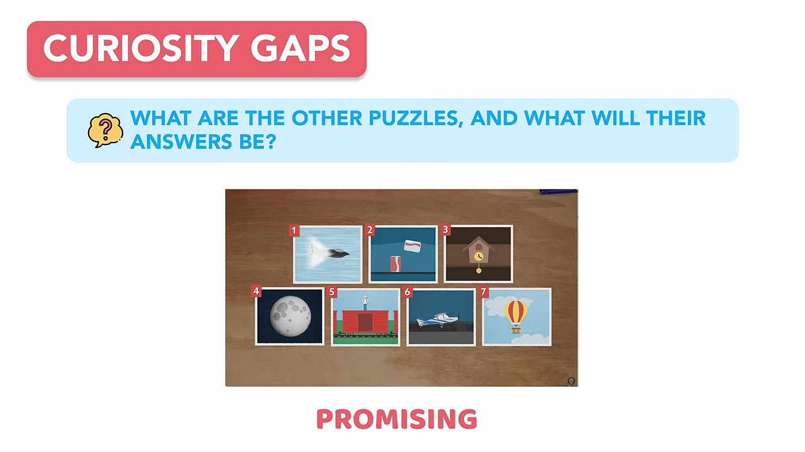
Nguồn: “How to make an EVEN MORE killer YouTube intro” — ví dụ Mark Rober
Phần 5 · Mở đầu video
Vì sao xem video NÀY mà không phải video khác?
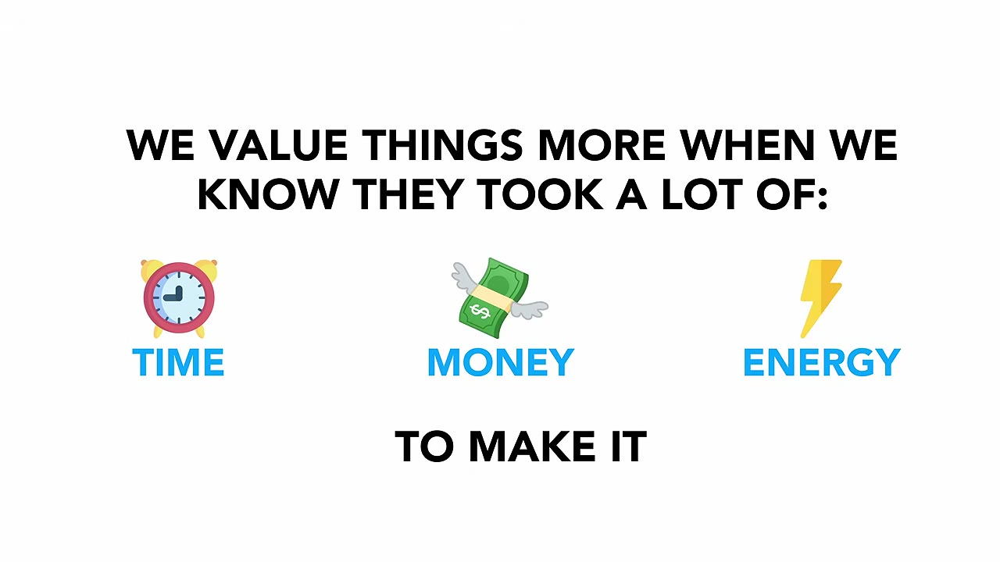
Chuyên môn — nói thẳng, hoặc ngầm (áo blouse của bác sĩ)
Công sức — thấy tốn công thì thấy đáng (“input bias”)
Cá tính — điềm tĩnh, phân tích cũng là cá tính
Bằng chứng — cho thấy kết quả sớm
Mark Rober chồng cả ba: bằng chứng + công sức + cá tính.
Nguồn: “How to make an EVEN MORE killer YouTube intro” · Jay Clouse (input bias), trích trong “How MrBeast Solved YouTube Retention”
Phần 5 · Giữ chân
Khung giữ chân năm chặng
Chặng
Mục tiêu
Cách làm
5 giây đầu
Đúng điều đã hứa
Câu đầu = title, khung đầu = thumbnail
20 giây đầu
Lý do ở lại tới cuối
Bối cảnh · phần thưởng · khoảng trống tò mò
Thân bài
Đường giữ chân nằm ngang
Đổi hình mỗi 3–5 s · tương phản · chu kỳ năng lượng cao → thấp
Kết
Ấn tượng còn lại
Lộ phần thưởng lớn, kết ở nốt cao, không kéo dài
Hậu kỳ
Cắt mọi đoạn nhạt
Bạn bè chê thẳng · ngồi xem người khác xem
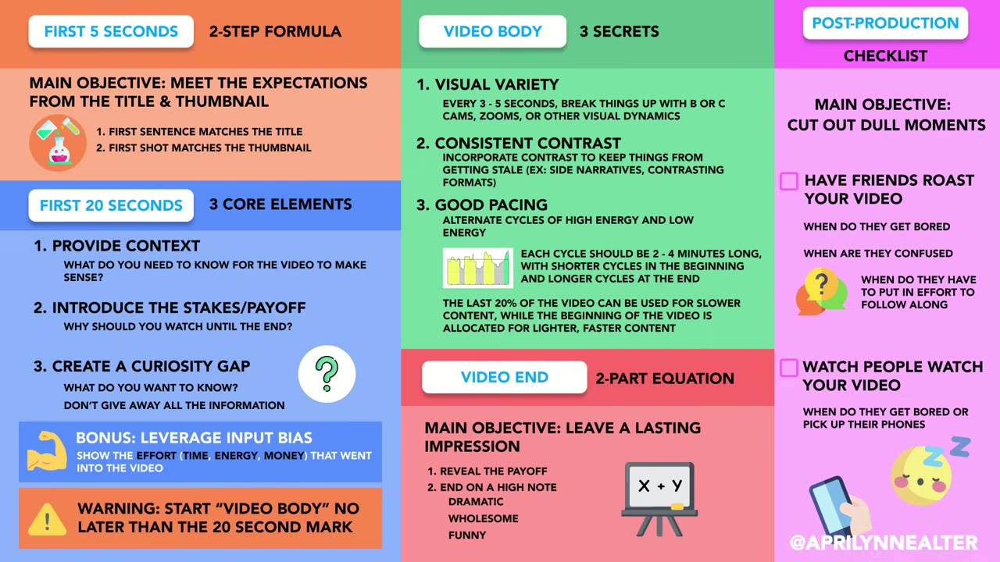
Video kết bằng một bảng tóm tắt một trang — người xem chụp lại.
Nguồn: Aprilynne Alter — “How MrBeast Solved YouTube (Retention)” · đồ thị năng lượng: Paddy Galloway
Đo, không tin lời
Video dạy giữ chân có tự làm đúng điều nó dạy?
296
lần cắt cảnh trong 14 phút
1.7 s
độ dài cảnh trung vị
4.6%
thời gian màn hình gần như đứng yên
29 s
mở đầu — và tác giả tự nhận đã quá 20 s
Đo trên “How MrBeast Solved YouTube (Retention)”: đứng yên = dưới 2% điểm ảnh đổi so với 2 giây trước
Case study · Video giáo dục triệu view
Cho người xem đoán sai trước, rồi mới giải thích
Veritasium · 4.5 tr
99% → 9%
Xét nghiệm đúng 99%, bệnh hiếm 0.1%: dương tính chỉ có 9% khả năng mắc bệnh
Vsauce2 · 14 tr
23 người
đã đủ 50.7% có hai người trùng sinh nhật — người ta đoán ~6%
3Blue1Brown · 6 tr
85% sai
Hỏi lại bằng “100 người như vậy, bao nhiêu…?” — gần như không ai sai
Không video lớn nào mở bằng định nghĩa. Đoán sai → một công cụ đơn giản → “à, ra thế”.
Nguồn: Veritasium “The Bayesian Trap” · Vsauce2 “The Birthday Paradox” · 3Blue1Brown “Bayes theorem” (bài toán Linda, theo lời video)
Phần 5 · Kết video
Kết ở đỉnh, rồi dẫn sang đúng MỘT video tiếp
Kết ở nốt cao
Lộ phần thưởng lớn → một câu ấm / bất ngờ → dừng. Đừng kéo hai đoạn chậm sau đỉnh
Một video cụ thể
“Nếu bạn thích video này, bạn sẽ thích video về X” + màn hình kết thúc trỏ đúng video đó
Vòng xem liền
Xem 2, 3, 4 video liền → YouTube hiểu “kiểu người này thích kiểu video này”
Mẹo mở kênh: ra mắt cùng lúc 4–5 video nối nhau bằng màn hình kết thúc — cùng một “luận đề” của kênh.
Nguồn: “My BIGGEST Advice…” (7:36–9:38; đội Fearless: “launch with five videos”) · “How MrBeast Solved YouTube Retention”
Phần 6 · Đọc chỉ số
Mỗi chỉ số trả lời một câu hỏi — và chỉ ra chỗ cần sửa
Chỉ số trong Studio
Câu hỏi
Thấp thì sửa ở đâu
Lượt hiển thị
YouTube có chịu đưa video đi không?
Ý tưởng, độ rộng khán giả
CTR (tỷ lệ bấm)
Người thấy có bấm không?
Title + thumbnail
Giữ chân 30 s đầu
Có đúng điều đã hứa không?
Câu đầu, khung đầu
Thời lượng xem TB, đường giữ chân
Có xem tới cuối không?
Thân bài: chỗ rơi = chỗ nhạt
Người xem mới / quay lại
Có xem tiếp không?
Định dạng nhất quán, luật 80%
Quốc gia, độ tuổi
Ai đang thật sự xem?
Phụ đề, lồng tiếng, chủ đề lân cận
Bắt đầu từ trang Tổng quan: lượt xem, thời gian xem, người đăng ký trong 12 tháng có đang đi lên không?
Nguồn: “How to ACTUALLY Use YouTube Studio (ft. the guy who made it)” — Amjad Hanif, VP Creator Products, YouTube (09/2024)
Phần 6 · Đọc chỉ số
Mẹo của YouTube: tách nội dung khỏi thuật toán
Nguồn lưu lượng → Tính năng duyệt → Nguồn cấp dữ liệu Kênh đăng ký
Khán giả ở đây video nào cũng là người đăng ký — gần như không bị thuật toán chọn lọc.
CTR ở đây thấp hơn các video khác → vấn đề nằm ở nội dung / gói đăng, không phải ở “thuật toán không đẩy”.
≤ 10%
CTR của nguồn cấp kênh đăng ký — kể cả video tốt nhất
90% người đã bấm đăng ký không xem mọi video. Bình thường. Người xem MỌI video của bạn là nhóm rất nhỏ.
Spike (đỉnh): nhiều người xem lại, tua tới, chia sẻ — hoặc khó hiểu nên xem lại
Dip (hố): người xem bỏ đi hoặc tua qua đúng chỗ này
Phẳng = xem trọn đoạn · dốc dần = mất hứng từ từ (dốc nhẹ là bình thường)
So với 10 video gần nhất cùng độ dài (đường “typical”), và tách theo người xem mới / quay lại, có / chưa đăng ký. Cần video ≥ 60 giây, ≥ 100 view; dữ liệu trễ 1–2 ngày.
Nguồn: YouTube Help — “Measure key moments for audience retention” (support.google.com/youtube/answer/9314415) · hình là minh hoạ
Phần 6 · Đọc biểu đồ giữ chân
Thấy hình dạng nào, sửa ở đâu
Thấy
Làm gì (theo YouTube + các nguồn đã học)
Intro thấp (rơi mạnh 30 s đầu)
Title, thumbnail chưa khớp nội dung → sửa gói đăng hoặc mở đầu; thử nhiều kiểu 30 giây đầu
Top moment nằm cuối video
Đưa nội dung hấp dẫn đó lên sớm hơn — người xem luôn ít dần về cuối; làm video mới đào sâu đúng phần đó
Spike
Xem lại đoạn đó: hay thật (nhân rộng) hay khó hiểu (giải thích lại)?
Dip
Xem đúng giây đó: chuyển cảnh chậm, quảng cáo, lan man, lộ đáp án quá sớm? Cắt hoặc rút ngắn ở video sau
24 giờ đầu, CTR và lượt hiển thị đều dưới mức thường → đổi (title dễ đổi hơn thumbnail)
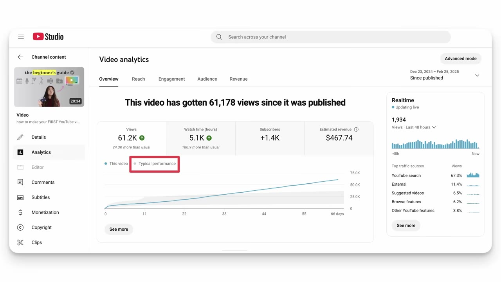
Bình thường? Chờ qua “cửa sổ bứt lên” của kênh mình — xem dải xám Typical, chỗ nó đổi độ dốc
Có kênh bứt lên sau 2 ngày, có kênh sau 1 tuần (Aprilynne: ngày 8–10). Đổi xong có thể mất thêm một tuần mới thấy kết quả.
Nguồn: “give me 8 minutes, I’ll make your titles 81% better” (5:37–6:50)
Phần 6 · Đọc chỉ số
Video flop: lỗi bấm, lỗi xem, hay lỗi ý tưởng?
Lỗi BẤM
CTR + lượt hiển thị thấp
Gói đăng chưa trúng → đổi title, thumbnail; dùng bản dự phòng
Lỗi XEM
Thời lượng xem dưới mức thường
Mở đường giữ chân: rơi ở 30 s đầu, hay rơi đều? Đoạn nào làm người ta bỏ?
Lỗi Ý TƯỞNG
Gói đăng và giữ chân đều ổn
Trần thấp, người lạ không quan tâm, thiếu cảm xúc → thêm một luật lọc ý tưởng
Đừng hoảng: lượt hiển thị CAO mà CTR THẤP thường là tốt — YouTube đang đưa video ra ngoài khán giả quen. Chỉ đổi khi view, lượt hiển thị và CTR cùng thấp.
Nguồn: “My BIGGEST Advice…” (32:02–33:35) · “how to make a killer youtube thumbnail” (26:39–27:40)
Phần 6 · Đọc chỉ số · Paddy Galloway
Cách Paddy Galloway phân tích một video
1
Lượt xem
Mọi phân tích bắt đầu từ view: bùng đầu rồi chậm, hay ngược lại?
2
Đường giữ chân
Cách nhanh nhất để học khán giả thích gì, ghét gì
3
Chỉ số khác
CTR, AVD có giải thích thêm gì không — xét cả bối cảnh
4
Kế hoạch
“Video vừa rồi dạy mình 3 điều gì?”
Ví dụ thật: kênh thể thao lớn — mỗi lần chèn tiểu phẩm hài dàn dựng, người xem rơi đều. Bỏ kiểu “dàn dựng”, dồn vào câu chuyện cá nhân, thật → kênh lên.
Nguồn: Creator Insider — “Paddy Galloway Dives Deep on Video A/B & Ask Studio” (14:31–16:43) · Paddy: đã soi hơn 10.000 đường giữ chân từng giây
Phần 6 · Đọc chỉ số
CTR cao chưa phải là thắng
“You can get a really high click-through rate but it may not actually translate to watch time… that’s not really success for your content.” — Amjad Hanif, YouTube
Watch time share
Test & Compare chọn thắng theo thời gian xem — cố ý không theo CTR
Thử bản khác hẳn
“Đừng chỉ đổi màu áo rồi gọi đó là A/B”
Thắng tháng đầu ≠ thắng mãi
Fan cũ xem rồi, khán giả mới tới — thumbnail khác có thể hợp hơn
Nguồn: “How to ACTUALLY Use YouTube Studio (ft. the guy who made it)” (09/2024, 4:39–6:40)
Phần 7 · Shorts
Shorts: thứ cần nhìn không phải số view
Từ 31/03/2025
View tính ngay khi Short bắt đầu phát hoặc phát lại
Số cũ đổi tên thành engaged views (Analytics nâng cao) — vẫn là cơ sở xét kiếm tiền YPP.
Trong Studio
Viewed vs. swiped away
Bao nhiêu người dừng lại xem thay vì lướt qua — quyết định trong 1–2 giây đầu.
Triệu chứng
Sửa ở đâu
Bị lướt nhiều
Giây đầu: bỏ chào hỏi, câu móc lên trước
Dừng xem nhưng % xem thấp
Giữa và phần trả lời: không giữ được lời hứa
Nguồn: thông báo của YouTube trên Help Community (03/2025) · ngưỡng “70–80% viewed” trên các blog không thống nhất — chỉ tham khảo
Phần 7 · Shorts
Shorts có kéo người đăng ký như lời đồn?
Paddy Galloway · 5.400 Shorts, 3,3 tỷ view
22.7
video dài
16.9
Shorts
người đăng ký / 10.000 view
Aprilynne tự thử · kênh mới, 30 ngày
118
sub từ ~4.500 view dài
17
sub từ ~10.000 view Shorts
1 Short/ngày + 1 video dài/tuần
Kết luận của họ: làm một mình, đang cần 1.000 sub → ưu tiên video dài. Shorts hợp nhất khi là cắt từ video dài, không tốn thêm công.
Nguồn: Aprilynne Alter — “I REGRET Making YouTube Shorts” (07/2023). Số liệu năm 2023, trước khi YouTube đổi cách đếm view Shorts — kiểm lại trên kênh mình.
Phần 7 · Shorts
Cắt Short từ video dài: một ý, tự đứng được
Một ý không cần ngữ cảnh trước nó; 20–50 giây
Câu gây tò mò nhất lên đầu — không cần theo thứ tự video gốc
Bỏ câu mở bằng “Nhưng…”, “Và…”, “Quay lại…”
Chữ móc trên màn hình đúng sự thật như lời nói, không phóng đại
Title là câu người xem tự gõ tìm, không phải tên khái niệm
Related video trỏ về video dài — đường kéo người xem về
Short triệu view cùng đề tài
Zack D. Films — Monty Hall · 40 tr
3Blue1Brown — medical test paradox · 11 tr
Một nghịch lý, một câu hỏi, trả lời gọn.
Số view tra YouTube Data API, 10/2026
Phần 8 · Nâng cấp kênh
Mỗi giai đoạn của kênh, một việc quan trọng nhất
0 → 1K
Bền bỉ + chọn “làn”
Làn = khán giả + giá trị; coi là giả thuyết
Ra mắt 4 video, ≥ 1 video/tuần
≥ 10 video mới đổi làn; 50 video không chạy → giả thuyết sai
Một nền tảng thôi
1K → 10K
Gói đăng + đà
30 title mỗi video, mượn khuôn đã thắng
Outlier của chính mình (300 → 1.200 view) → “công thức video”
Luật 80%
Chưa nhận brand deal; bắt đầu thu email
10K → 100K
Nâng “sàn view”
Nhiều video “bom tấn”: đã có tiền lệ, khán giả rộng, chạm tò mò / khao khát / sợ hãi
Ít flop: chẩn đoán và thêm luật lọc
Kiểm toán thời gian: bỏ, rút gọn, tự động, giao việc
“Video ích kỷ” → video có giá trị: “chơi Minecraft” → “100 ngày hardcore” → “Phá đảo Minecraft mà không nhảy?”
Nguồn: Aprilynne Alter — “My BIGGEST Advice for Starting and Growing a YouTube Channel” (10/2025, 720 nghìn view)
Phần 8 · Nâng cấp kênh
Hệ thống 90 ngày: ba pha, mười hai tuần
Tuần 1–4 · Nền móng
Tuyên bố cam kết công khai
Xem 30 video như người làm, lập “swipe file”
Công thức video: khán giả · giá trị · định dạng · cảm giác · điểm khác biệt
8 ý tưởng: thử được, có trần cao, làm kịp
Tuần 5–9 · Chạy nước rút
Đăng gấp đôi nhịp thường
Mỗi video một mục tiêu học
Sau mỗi video: 20–30 phút tự đánh giá
“Nếu có thêm thời gian, mình sẽ làm gì?”
Tuần 10–12 · Video “bom tấn”
Quay về nhịp cũ, dồn hết cho MỘT video
Ý tưởng có outlier chứng minh
Gộp mọi câu trả lời “nếu có thêm thời gian”
Tuần cuối: chọn nhịp đăng mới
Tác giả: lần đầu → đủ điều kiện kiếm tiền; video bom tấn đưa kênh từ dưới 1.000 lên hơn 10.000 sub trong chưa tới một tháng.
Nguồn: Aprilynne Alter — “The EXACT System to Blow Up on YouTube in 90 Days” (09/2025) · kết quả là lời tác giả kể
Phần 8 · Nâng cấp kênh
100 video. Mỗi video sửa MỘT thứ.
“Improve something every time.” — MrBeast
Chất lượng hơn số lượng — lịch đăng cứng là bẫy
Xem lại biểu đồ giữ chân của chính mình sau mỗi video
Có bạn đồng hành — nhóm cùng nghề học mỗi ngày
Nguồn: “I Watched Every MrBeast Interview” (20:12, 22:48–25:41)
Cộng đồng đang làm gì · một video chia sẻ trên Facebook
Mô hình “nuôi nhiều kênh”: lấy gì, tránh gì
Họ làm
8 kênh, cùng cách chọn nội dung, cùng cách dựng (có AI)
48 giờ: 43K · 14K · 8K · 3K · 200 · ba kênh ≈ 0
Đổ cho “mail”: mỗi kênh một Gmail, IP, máy ảo; nuôi hồ sơ để tạo Gmail không cần số điện thoại
Lấy được
Kênh thương hiệu (Brand Account), nhiều người quản lý = dự phòng chính thức. Thử nhiều ý song song, dồn sức vào cái thắng.
Chưa chứng minh
8 kênh, 48 giờ, không nhóm đối chứng — “do mail” mới là giả thuyết. Video gắn link tiếp thị của công cụ.
Rủi ro chính sách
Nội dung hàng loạt, lặp lại → không được kiếm tiền (YPP “inauthentic content”, 15/07/2025). Né xác minh, lập kênh để lách xử phạt → có thể bị chấm dứt mọi kênh liên quan.
Nguồn: video “Hành trình 30 ngày kiếm tiền với YouTube — ngày 12” (Facebook) · YouTube Help: Channel or account terminations · tin YPP 07/2025
Phần 8 · Nâng cấp kênh
Đọc lời khuyên YouTube như nhà khoa học
Câu nghe rất thuyết phục
Thực ra là
“70% giữ chân cho mọi video”
Lời khuyên cho một người bạn, không phải chuẩn chung
“Thumbnail tốt hơn 81%”
Câu trong tiêu đề, không có nguồn
“4–5 sửa nhỏ = 7× view”
Ví dụ minh hoạ, không phải phép đo
“Book Review: 3.2K view”
Số giả định để so sánh
Toàn ví dụ thành công
Chọn lọc — không ai kể các video thất bại cùng công thức
“Dùng công cụ X để tìm ý”
Nhà tài trợ: Spotter Studio, One of Ten, công cụ nuôi tài khoản…
Lấy cơ chế, không lấy con số. Thước đo cuối cùng là biểu đồ giữ chân của chính kênh mình.
Các câu trên đều trích từ những video đã dùng trong bài này
Phần 8 · Nâng cấp kênh
Sáu bước học một video mẫu
01 · Chuẩn bị
Lấy lời (phụ đề hoặc Whisper) + ảnh mỗi 5 giây ghép thành bảng
02 · Xem hết
Đọc toàn bộ lời VÀ nhìn mọi khung; ghi cả cách video tự làm
03 · Đánh giá nguồn
Đâu là lời gốc, số thật; đâu là phóng đại, tài trợ
04 · Đo khoảng cách
Cùng thước đo lên video của mình: nhịp cắt, câu đầu, giờ vào thân bài
05 · Đề xuất
Đổi ở bước nào, tốn bao nhiêu — và cái gì KHÔNG bắt chước